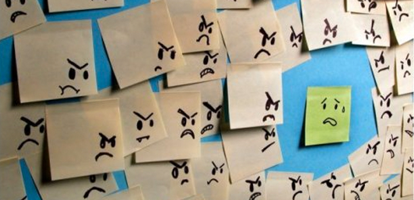

DBIT-Counselling
DON BOSCO INSTITUTE OF TECHNOLOGY
COUNSELLING DEPARTMENT
Home
About Us
Take a test !
Food For Thought!
Food For Thought!
Academic problems
Addictions
Emotional issues
Aggression
Psychosis
LGBT
Personal issues
Adjustment issues
Low self esteem
Sexual behaviour
Pressure-related issues
Admin
Exit
Pressure related issues:
Peer pressure
 Peer pressure is influence on a peer group, observers or individual exerts that encourages others to change their attitudes, values, or behaviours to conform to groups.
• A person affected by peer pressure may or may not want to belong to these groups. They may also recognise dissociative groups with which they would not wish to associate, and thus they behave adversely concerning that group's behaviours.
• Peer pressure is a part of life for everyone, but it can be an especially strong influence during the teen years when peers are very important to a teen's identity.
• This means that teens need to learn to handle peer pressure, and to recognize when it is positive and when it is negative.
• As adolescents enter the teen years, they usually begin to focus more on their peers or friends. The desire to fit in with peers can be a very strong influence on teens. Peers influence most aspects of a teen's life, including how teens dress, what music they listen to, and what kind of activities they are involved in.
• Peer pressure is not always bad. Negative peer pressure is when teens feel pressured to do something they know is wrong, such as smoking, drinking, doing drugs, or stealing, or something they don't want to do such as cutting class.
• Teens may be tempted to give in to negative peer pressure because they want to be liked or fit in, they are afraid of being made fun of, or they want to try something other teens are doing. Negative peer pressure will remain a part of a teen's life into adulthood, which is why it is important for teens to learn how to deal with it.
Decision making
In psychology, decision-making is regarded as the cognitive process resulting in the selection of a belief or a course of action among several alternative possibilities.
• Every decision-making process produces a final choice that may or may not prompt action. Decision-making is the process of identifying and choosing alternatives based on the values and preferences of the decision-maker.
• Decision-making can be regarded as a problem-solving activity terminated by a solution deemed to be satisfactory. It is, therefore, a process which can be more or less rational or irrational and can be based on explicit knowledge or tacit knowledge.
Bullying/cyberbullying
Bullying is the use of force, threat, or coercion to abuse, intimidate, or aggressively dominate others. The behaviour is often repeated and habitual.
• Behaviours used to assert such domination can include verbal harassment or threat, physical assault or coercion, and such acts may be directed repeatedly towards particular targets.
• Rationalizations for such behaviour sometimes include differences of social class, race, religion, gender, sexual orientation, appearance, behaviour, body language, personality, reputation, lineage, strength, size or ability.
• If bullying is done by a group, it is called mobbing. Cyberbullying is a type of bullying. With the increased use of technology, cyberbullying has become increasingly common, especially among teenagers.
• It is an action of harming or harassing via information technology networks in a repeated and deliberate manner.
Legal definitions:
Cyberbullying is defined in legal glossaries as
• Actions that use information and communication technologies to support deliberate, repeated, and hostile behaviour by an individual or group, that is intended to harm another or others.
• use of communication technologies for the intention of harming another person
• use of Internet service and mobile technologies such as web pages and discussion groups as well as instant messaging or SMS text messaging with the intention of harming another person.